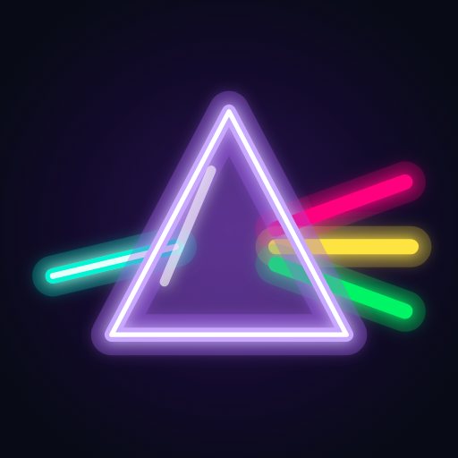

Bend the light · Light the city
Relight the
neon city.
Turn prisms, mix beams of colored light and send the right neon to every socket until the sign blazes. Then hang it on the skyline.
Get supportMix the light
Cyan, magenta and yellow combine into new neon. Splitters, filters, lenses, bridges and quantum gates join along the way.
A new board every day
A Daily Puzzle, an Endless Tower of generated floors and an Academy that teaches each piece.
Your own pace
Play offline. Progress and settings stay on your device. Available in English, Turkish, Spanish, German and Portuguese.
We're here to help
Glowtown support
For a puzzle question, bug report or privacy request, email pixerion.dev@gmail.com. Include your app version, device model, Android or iOS version and the level number, if relevant. Please avoid sending sensitive information.
Where is my progress saved?
Your progress is saved locally on your device. There is no player account or in-game cloud sync. Removing the app can erase progress; your device backup settings may also apply.
Can I play without internet?
Puzzles work offline. Advertising, including optional rewarded ads, needs an internet connection and ad availability.
How do I change the language or manage advertising privacy?
Open Settings (the gear on the city screen). You can pick the language there, and use Privacy options when that choice is required in your region. See our privacy policy for details about Google AdMob.